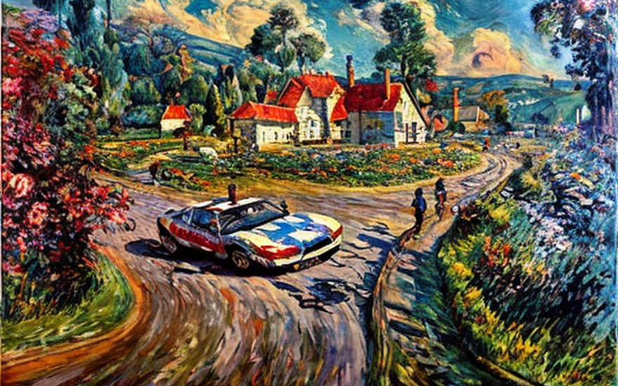

The sheriff and the public key cryptography
HOME
Table of Contents
The unknown enemy

Y’all ever been out to the dusty back roads of Kansas, where the sun beats down on the crops and the air is thick with the scent of soil and sweat? Well, that’s where our story takes place.
Sheriff Hank was a rough and tumble kinda guy, with calloused hands and a gruff voice that could scare even the toughest of criminals. He knew every inch of his county like the back of his hand, and he kept the peace with an iron fist.
One day, a stranger came into town. He didn’t belong to any social graph, which made him a bit of an oddity. In this day and age, everyone was connected in some way, whether it be through Facebook, Instagram, or Twitter. But this guy? He didn’t have a single friend online. Not a single like, not a single comment.
Sheriff Hank took notice of the stranger right away. He didn’t trust people who didn’t have any online presence. How were they supposed to be part of society if they didn’t have a place in the social graph? It was just plain suspicious.
The stranger, who called himself Jack, didn’t seem to care that he was an outcast. He walked around town with a smile on his face, tipping his hat to the locals and admiring the crops in the fields.
Sheriff Hank decided to investigate. He went online and started digging. He looked at every social media platform, every blog, every forum. But there was nothing. Not a single mention of Jack. It was like he didn’t exist.
Meanwhile, strange things were happening in the county. Crops were failing, animals were disappearing, and people were getting sick. It was like there was a curse on the land.
Sheriff Hank began to suspect that Jack had something to do with it. But he couldn’t prove anything. He didn’t have any evidence, no social media posts to link him to the crimes.
So, Sheriff Hank decided to take matters into his own hands. He confronted Jack, asking him point-blank what he was doing in their town. Jack just smiled and tipped his hat again.
“I’m just passing through,” he said. “No harm done.”
But Sheriff Hank wasn’t satisfied. He knew there was more to this stranger than met the eye.
The two of them began to tussle, rolling around in the dirt like two hogs in a pen. It was a fierce fight, but in the end, Sheriff Hank emerged victorious.
He handcuffed Jack and threw him in the back of his squad car, ready to take him to jail.
But as they drove away from town, Sheriff Hank couldn’t shake the feeling that something wasn’t right. Jack was too calm, too collected. He didn’t seem like the type of guy who would go down without a fight.
And then it hit him. Jack didn’t belong to any social graph because he wasn’t human. He was a demon, sent to wreak havoc on the town and its people. He knew he couldn’t let him go anywhere he like, or else the destruction of the city was inevitable. He put him in a holding cell, just to be sure.
Finally the crops began to grow again, the animals returned, and the people were no longer sick. Sheriff Hank knew that he had saved his town from a terrible fate.
The digital identity

Sheriff Hank knew that he needed more information about Jack. He had a hunch that the demon was linked to some forgotten social graph, one that could only be accessed through a private cryptography key.
He went back to the station and fired up his computer. As a seasoned lawman, he knew his way around the digital world, but he had never dealt with cryptography before.
He started to research, diving deep into the world of public key cryptography. He learned about how private keys and public keys worked together to create a secure communication channel, one that could not be easily intercepted or tampered with.
As he delved deeper, he realized that social media certifications were linked to public key cryptography. They were used to verify a person’s identity and ensure that their online presence was legitimate. If Jack had a certification, it would be the key to proving his identity.
Sheriff Hank knew that he needed to extract information from Jack, to see if he had any such certifications. He went back to the holding cell and sat down across from the demon.
“Jack,” he said, “I need you to give me some information. Do you have any social media certifications?”
Jack just grinned. “Why would I need a certification? I don’t care about the social graph.”
Sheriff Hank sighed. He knew that he needed to convince Jack that it was in his best interest to cooperate. “Listen, Jack. If you have a certification, it will prove that you’re not just some random demon. It will give you credibility, make it easier for you to navigate the online world.”
Jack raised an eyebrow. “And what’s in it for me?”
Sheriff Hank thought for a moment. “Well, if you give me the information I need, I can make sure that you’re not harmed. I can protect you from the other demons who might try to take advantage of you.”
Jack seemed to consider this for a moment. “Alright, Sheriff. I’ll tell you what you need to know. But you have to promise me that I’ll be safe.”
Sheriff Hank nodded. “I promise.”
Jack then proceeded to reveal his private cryptography key, the key to a forgotten social graph that no one else had access to. Sheriff Hank used the key to log into the social media site, and sure enough, Jack had a certification. It was a mark of authenticity, proof that he was who he said he was.
Sheriff Hank couldn’t believe his luck. He had found the evidence he needed to prove Jack’s identity, all thanks to his knowledge of public key cryptography.
As he left the holding cell, he couldn’t help but think about how important cryptography was in the digital age. It was the key to unlocking the secrets of the online world, the tool that allowed people to communicate securely and verify their identities.
Privacy and security
Sheriff Hank knew that he needed to take things one step further. He wanted to ensure that Jack had a verifiable online identity, but he also wanted to make sure that Jack’s real name remained hidden. He turned to another tool in his digital arsenal: ecdsa encryption.
Using ecdsa encryption, Sheriff Hank was able to create a series of derivative identities for Jack, each of which was linked to his private key but not to his real name. These identities would allow Jack to use different usernames and handles online, all while proving that he was the same person.
Sheriff Hank explained the plan to Jack, who seemed impressed by the technology. “So you’re saying that I can have multiple identities online, but still prove that I’m me?”
“That’s right,” Sheriff Hank said. “With this encryption, we can create a system that allows you to have your privacy and your security at the same time.”
Jack nodded. “Okay, let’s do it.”
Sheriff Hank set to work, creating a set of encrypted identities for Jack. Each identity was linked to his private key, but not to his real name. This meant that Jack could use different usernames and handles online, all while proving that he was the same person.
Jack was thrilled with the results. He was able to log into his various social media accounts using his different identities, all while keeping his real name hidden from prying eyes.
But there was one catch: only Sheriff Hank knew Jack’s real name. The encryption was so secure that not even Jack could access his own real name. This meant that Sheriff Hank had complete control over Jack’s online identity.
At first, Jack was hesitant about this arrangement. “What if you misuse my information?” he asked.
Sheriff Hank shook his head. “I promise to use this information only for the good of the town. I won’t reveal your real name to anyone else, and I’ll only use your online identities for law enforcement purposes.”
Jack nodded, satisfied with the explanation. “Okay, I trust you.”
And so it was that Jack became a fixture in the online world, using his various identities to navigate the digital landscape. He was able to prove his identity without revealing his real name, all thanks to Sheriff Hank’s knowledge of ecdsa encryption.
The emerging landscape of immutable data

As the years went by, the town’s youth began to lose faith in Sheriff Hank’s methods. They no longer trusted him with their information, and instead, they turned to a new technology that had emerged on the scene: the blockchain.
The blockchain was a revolutionary new tool that allowed information to be stored securely and immutably. Unlike the guns and shotgun of Sheriff Hank, which could be stolen or corrupted, the blockchain was impervious to attack.
The town’s youth began to store their personal information on the blockchain, confident that it would remain safe and secure. They knew that even if Sheriff Hank tried to access their data, he would be unable to do so without their permission.
Sheriff Hank was dumbfounded by this new development. He had always thought that his methods were the best way to keep the town safe. But now, it seemed that the future belonged to a new generation of technology, one that he didn’t fully understand.
He tried to learn more about the blockchain, but found himself struggling to grasp its complexities. It seemed like every time he thought he had a handle on it, there was another layer of nuance and detail that he hadn’t considered.
Eventually, Sheriff Hank realized that he needed to adapt to the changing times. He couldn’t rely solely on his guns and his shotgun anymore. He needed to learn how to use the new tools that were emerging, even if they seemed foreign and intimidating.
And so he began to study the blockchain, immersing himself in its intricacies and learning everything he could about its capabilities. He read whitepapers and attended conferences, determined to become an expert in this new technology.
As he delved deeper into the blockchain, Sheriff Hank began to see its potential. He realized that it could be used not only to store personal information, but also to create a more transparent and secure system of governance for the town.
He proposed a plan to the town council, outlining how the blockchain could be used to track everything from property ownership to voting records. The council was skeptical at first, but as Sheriff Hank explained the benefits of the blockchain in painstaking detail, they began to come around to his way of thinking.
And so it was that the town of Ridgeville became a pioneer in the use of blockchain technology for governance. Sheriff Hank had been a driving force behind the change, and the town’s youth began to respect him once again for his willingness to adapt and evolve with the times.
The sheriff and the technological transition
As Sheriff Hank adapted to the changing times, he found himself using his guns and shotguns less and less. They had become obsolete in the face of the blockchain, which provided a more secure way to store and verify public information.
Gone were the days when he needed to rely on violence and intimidation to keep the town safe. Now, he could use the power of the blockchain to ensure that everyone’s public identities and certifications were secure and verifiable.
He worked closely with the town’s IT department to develop a system of public identities that were stored on the blockchain. These identities included everything from driver’s licenses to birth certificates, and were linked to each person’s private key.
This meant that anyone who wanted to verify someone’s identity could do so easily, without the need for a physical ID or a face-to-face meeting. All they had to do was check the person’s public key on the blockchain and verify that it matched their private key.
Certifications were also stored on the blockchain, ensuring that anyone who claimed to have a certain skill or qualification could prove it easily and securely. This was particularly important for jobs that required specific training or certifications, such as doctors or electricians.
The blockchain made it impossible for anyone to falsify their public identity or certification, since all records were verified and immutable. This meant that the guns and shotguns that Sheriff Hank used to rely on were no longer necessary to keep public information safe.
Instead, he spent his days shooting birds and patrolling the town in a more peaceful and secure manner. He was proud to have been a part of the revolution in technology that had made this possible, and he knew that the town of Ridgeville was now a safer and more secure place because of it.
As he sat on his porch at the end of a long day, watching the sun set over the fields, Sheriff Hank reflected on the changes that had occurred in his lifetime. He knew that there would always be new challenges and new technologies to overcome, but he was confident that he could adapt to whatever the future held.
For now, though, he was content to enjoy the peace and security that the blockchain had brought to his town, and to know that he had played a role in making it all possible.